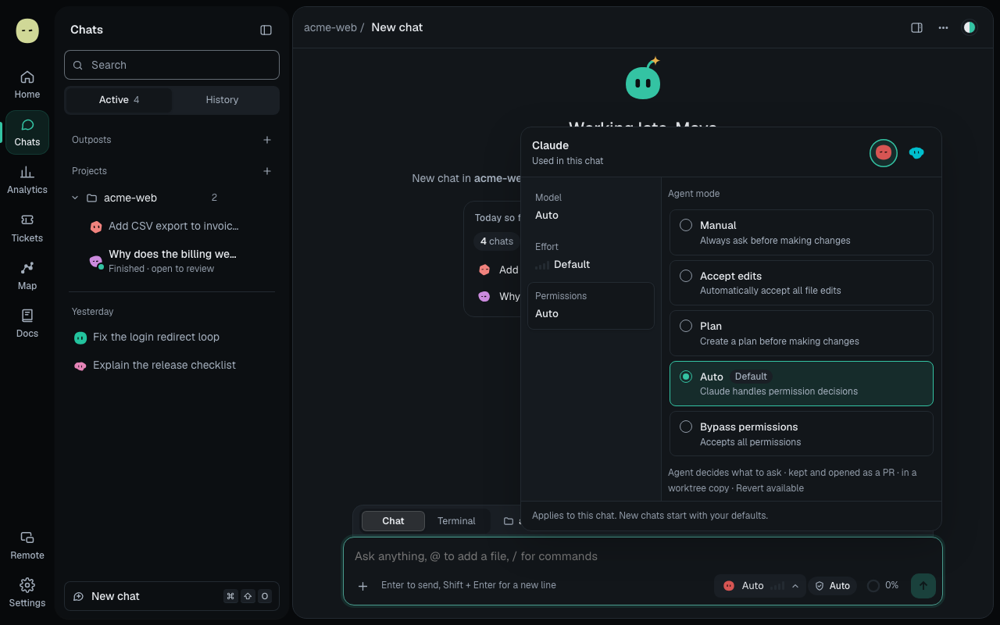
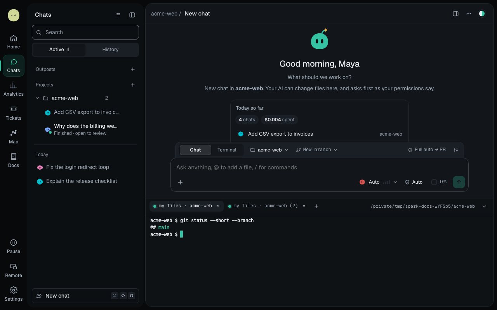
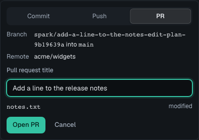

Free beta for macOS
A home base for autonomous work.
Run Claude Code and Codex side by side on your Mac. Follow every step, answer the approvals that matter, and get pull requests back.
Free beta · macOS 12+ · Apple silicon and Intel

Agents and modes
Your agent, in the mode you pick.
Choose Claude Code or Codex and one of its own permission modes, shown with the agent's own names. When the mode asks, you get a card with the agent's reason.
Each chat keeps its agent running between messages. Its sub-agents show as cards with what each one is doing, and the agent can start sub-chats in an outpost when the work spans repos.
A safety floor holds in every chat: only the chat's own spark/ branch is
pushed, never with plain force, and instruction files and git hooks ask first. Where a
mode never asks, Spark can't stop a step; it marks it ran without review and flags any
crossing.
Chat to pull request
From a chat to a pull request.
Each chat works on its own spark/ branch in a worktree. At
Full auto → PR, the agent pushes and opens the pull request, then
follows up on review comments.
Nothing ever merges for you. That click stays yours.
Browser pane
A browser your agent can debug.
Open your app beside the chat. The agent reads the page, console errors with stacks, and a network log with each request's start and end, so overlapping requests stand out.
It can click, type, inspect and run scripts, following your mode. It never sees password or card fields, and your own tabs always ask.
Mac control and terminals
Mac apps, and terminals that keep running.
Turn on Mac control and an agent can read another app and press its buttons and menus, one app per chat, on macOS 14 or later. A first use, a send or a delete asks in every mode; purchases, passwords and System Settings are refused.
Terminal sessions run Claude Code or Codex under tmux and survive restarts, updates and crashes.
Calendar
Scout keeps you on time.
Connect Mac Calendar or Google Calendar. A minute before a meeting, Scout lowers a card to the middle of your screen on a thread: Join, Snooze 1 min or Dismiss.
Join opens Zoom, Meet, Teams or Webex links in your browser. Try it.
Connectors
Bring your tickets and your team.
Connect GitHub, Atlassian (Jira and Confluence), Linear and Slack, or add an MCP server. Start a chat from a ticket and move it to In review when the pull request opens.
Every connection is optional, and Spark actions follow the agent's mode.
Phone remote
Answer from your phone.
Pair a phone over Tailscale to follow chats, answer approval cards and get a push when a chat needs you. Pairing is confirmed on the Mac, and the work stays there.
Mac control, the Browser pane and starting Terminal sessions stay on the Mac.
Local-first
Local-first, said honestly.
Your chats, settings and code stay on your Mac, and keys live in your Keychain. Spark has no account for you to create.
What leaves is what the work needs: your AI provider receives your messages and what the agent reads, and connected tools get what you or the agent send them. Select a line to see it.
The real app
Screenshots from the Spark Outpost user guide, made with demo data.



Try the beta.
Free while in beta. Updates download in the app, and you pick when to restart.
macOS 12+. Uses your own Claude Code or Codex CLI sign-in, or an API key. What's new